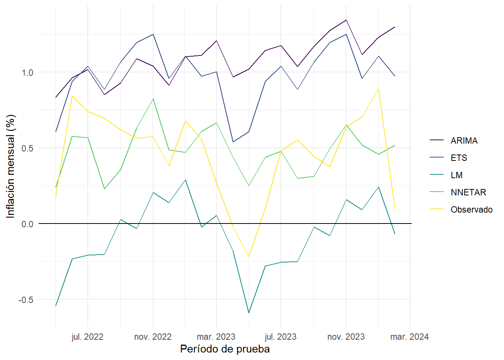
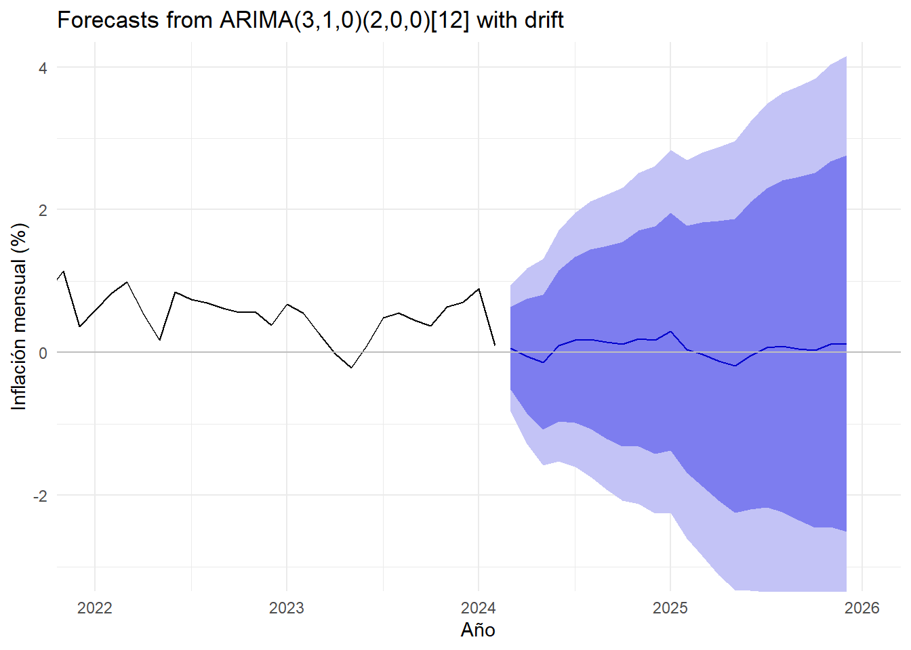
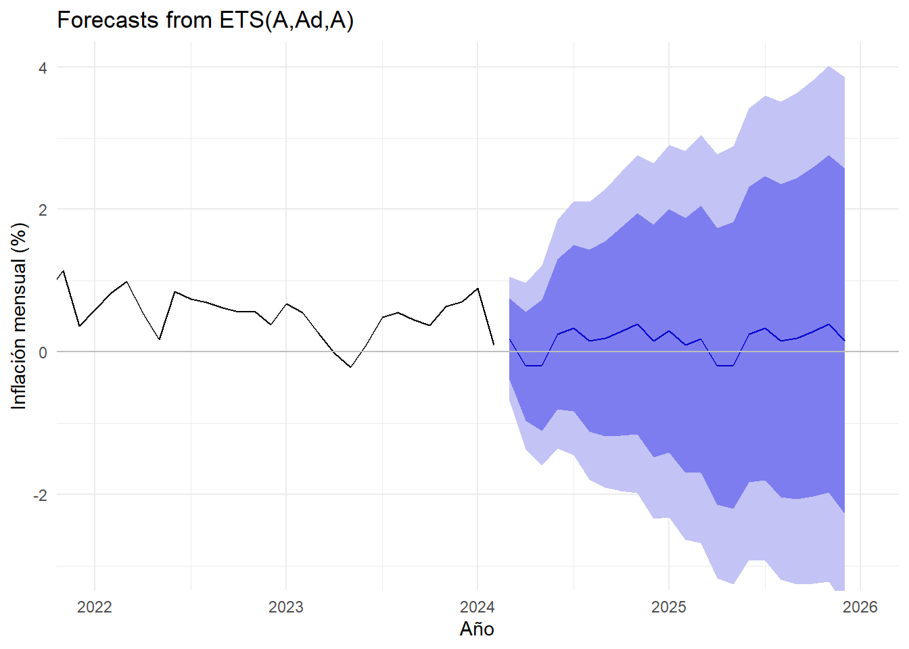
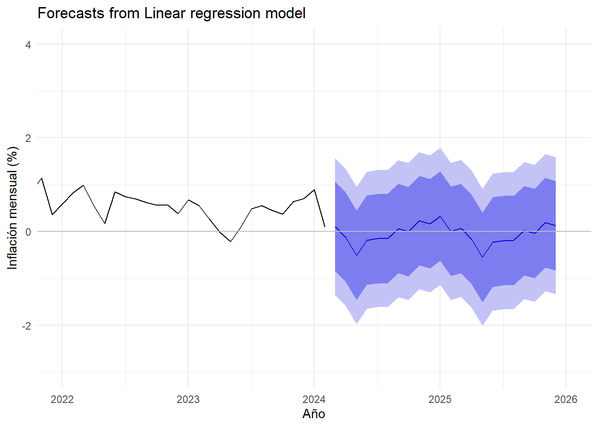
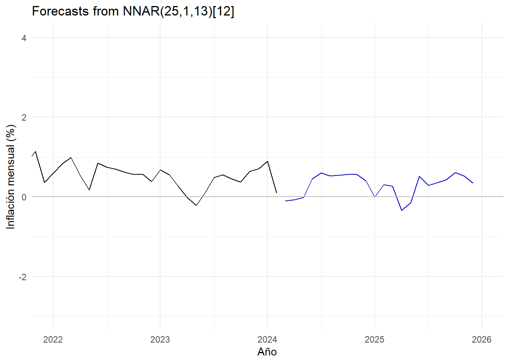
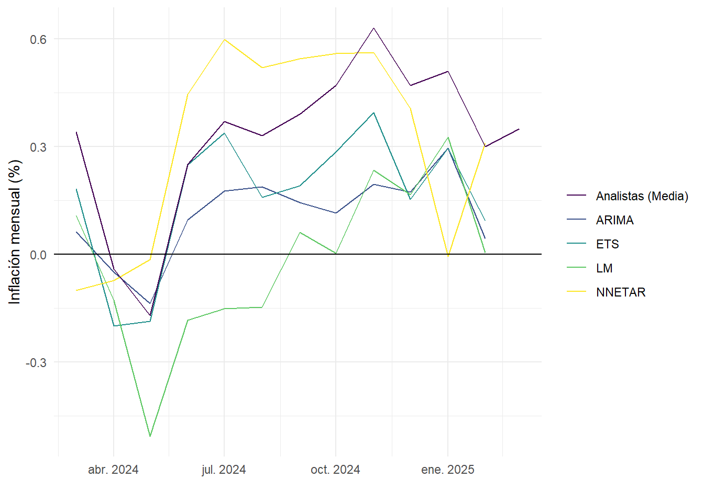
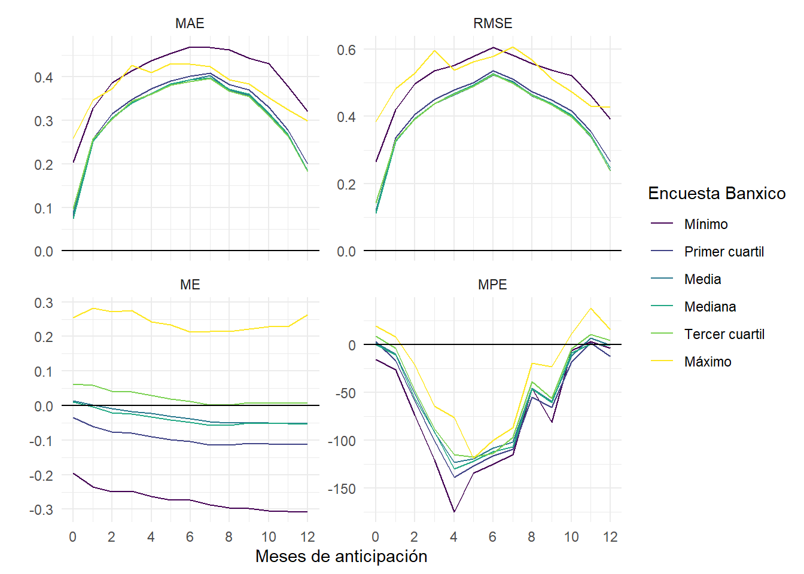

Pronóstico de inflación
Modelos univariados
Hay muchas maneras de predecir el futuro, lo que implica que ninguna es perfecta en todos los casos (Hamming 1997). Una manera de generar predicciones automáticamente es con modelos univariados, que solo utilizan una serie de tiempo como insumo de sus predicciones (Hyndman y Khandakar 2008).
En esta sección, comparamos los modelos ARIMA, ETS, LM, y NNETAR para predecir la inflación mensual en México. De estos, el modelo ARIMA es el más conocido y utilizado en la literatura. Los modelos ETS y LM son menos conocidos, son útiles por ser más simples. Por último, el modelo NNETAR es un modelo de redes neuronales para series de tiempo que ha demostrado ser útil en la predicción de series de tiempo (Hyndman y Athanasopolous 2021).
Probando los modelos
Una manera de comparar distintos modelos de predicción es evaluar su precisión en un conjunto de datos externo; es decir, en un conjunto de datos que no se utilizó para ajustar los modelos. En este caso, utilizamos los datos de inflación mensual desde enero 1994 hasta abril 2022 para ajustar los modelos y los datos desde mayo 2022 hasta febrero 2024 para evaluar su precisión.
La Figura 1 muestra las predicciones de los modelos en el conjunto de prueba contra la inflación mensual observada. El modelo NNETAR parece ser el más preciso.
| Modelo | ME | RMSE | MAE | MPE |
|---|---|---|---|---|
| ARIMA | −0.01 | 0.45 | 0.28 | −36.96 |
| ETS | 0.00 | 0.45 | 0.28 | −56.89 |
| LM | 0.00 | 0.72 | 0.44 | −61.10 |
| NNETAR | 0.00 | 0.30 | 0.20 | −3.72 |
| Modelo | ME | RMSE | MAE | MPE |
|---|---|---|---|---|
| ARIMA | 0.62 | 0.70 | 0.62 | −44.73 |
| ETS | 0.52 | 0.57 | 0.52 | 22.15 |
| LM | −0.54 | 0.60 | 0.54 | −77.84 |
| NNETAR | 0.02 | 0.28 | 0.23 | −79.03 |
La Tabla 1 muestra algunas métricas de precisión de los pronósticos dentro y fuera de la muestra de entrenamiento.1 El modelo más preciso fue NNETAR, puesto que tuvo errores más pequeños.
Pronóstico ex-ante
Sabiendo cuán precisos son los modelos, procedo a pronosticar la inflación mensual en México desde marzo 2024 hasta diciembre 2025. Solo para fines comparativos, utilizaré todos los modelos aunque el mejor fue NNETAR.
La Figura 2 muestra los pronósticos de los modelos para los siguientes 22 meses. Algo importante para notar es que el modelo NNETAR (Figura 2 (d)) no produce intervalos de confianza, puesto que las predicciones por redes neuronales pierden interpretabilidad y no permiten tener una medida de la varianza de la predicción.




Una manera de evaluar la precisión de los pronósticos ex-ante es con respecto a la encuesta de expectativas de inflación mensual del Banco de México (Banxico). La Figura 3 muestra los pronósticos de los modelos para los siguientes 12 meses y los compara con la media de las respuestas de la encuesta.

La Tabla 2 muestra la precisión de los modelos en la muestra completa respecto a la media de las expectativas de los analistas de Banxico. Es importante notar que el mejor modelo en nuestra prueba no es el modelo más cercano a la madia de los los analistas, mas el error es bastante pequeño.
| Modelo | ME | RMSE | MAE | MPE |
|---|---|---|---|---|
| ARIMA | −0.21 | 0.25 | 0.22 | −52.73 |
| ETS | −0.16 | 0.18 | 0.16 | −0.37 |
| LM | −0.34 | 0.36 | 0.34 | −46.39 |
| NNETAR | −0.01 | 0.23 | 0.18 | −0.49 |
Poder predictivo de la encuesta de expectativas
Esta sección evalúa la capacidad predictiva de la encuesta de expectativas de inflación del Banco de México. La Figura 4 muestra que las predicciones intercuartílicas tienen el mismo desempeño en cuanto a los errores absolutos. La media y la mediana tienen un error medio cercano a cero hasta los seis meses de anticipación; a partir de ese punto, tienen un sesgo negativo.
Es importante destacar que los errores absolutos no son monotónicos; las mejores predicciones son con anticipaciones cercanas a 0 y a 12 meses. Las peores predicciones son a seis meses de anticipación.

| Estadístico | MAE | RMSE | ME | MPE |
|---|---|---|---|---|
| Media | 0.31 | 0.41 | −0.03 | −56.89 |
| Mediana | 0.31 | 0.41 | −0.04 | −58.95 |
| Máximo | 0.37 | 0.52 | 0.24 | −33.80 |
| Mínimo | 0.40 | 0.51 | −0.27 | −73.22 |
| Primer cuartil | 0.32 | 0.42 | −0.09 | −64.32 |
| Tercer cuartil | 0.31 | 0.41 | 0.02 | −52.42 |
Referencias
Allen, Benjamin. 2022. «Forecasting U.S. Inflation». https://kaggle.com/code/benjaminallen24/forecasting-u-s-inflation.
Banco de México. s. f. «Sistema de Información Económica». Accedido 26 de marzo de 2024. https://www.banxico.org.mx/SieInternet/.
Hamming, Richard R. 1997. Art of Doing Science and Engineering: Learning to Learn. CRC Press. https://books.google.com?id=50hZDwAAQBAJ.
Hyndman, Rob J., y George Athanasopolous. 2021. Forecasting: Principles and Practice. Melbourne, Australia: OTexts. https://otexts.com/fpp3/.
Hyndman, Rob J., y Yeasmin Khandakar. 2008. «Automatic Time Series Forecasting: The Forecast Package for R». Journal of Statistical Software 27 (julio): 1-22. https://doi.org/10.18637/jss.v027.i03.
Notas
ME: Median Error.- Error de estimación promedio.
RMSE: Root median squared error.- Raíz cuadrada del error cuadrático medio.
MAE: Mean absolute error.- Error absoluto promedio.
MPE: Mean percentage error.- Error porcentual promedio.↩︎